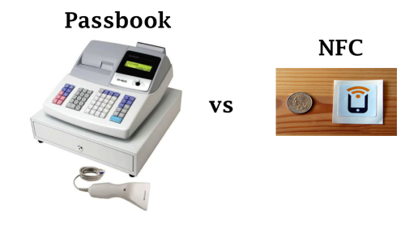
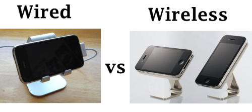
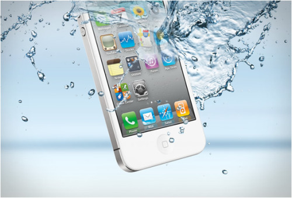
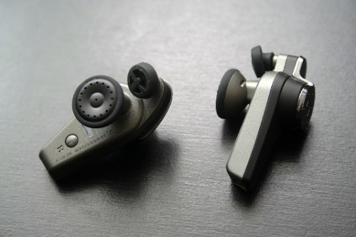
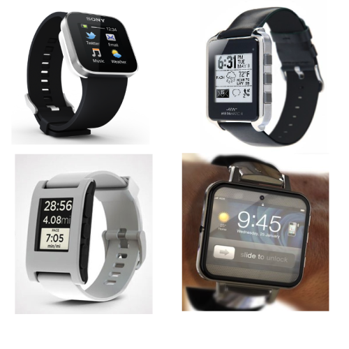

Nine Magical Features Left Out of the iPhone 5
Originally published at https://singularityhacker.com/nine-magical-features-left-out-of-the-iphone-5

It would be accurate to call Apples iPhone 5 announcement a snooze-fest. It was like a dubstep song where you keep waiting for the drop and it NEVER comes. One reason many of us were so disappointed is that Apple had the time, technical feasibility, intellectual property rights, and cash reserve to make any of the following magical technologies a reality but it didn’t.
1. nfc
The single greatest disappointment for many in the iPhone 5 announcement was no nfc. SVP Phil Schiller defended the decision by saying that “Passbook does the kinds of things customers need today”. I, for one, don’t buy it. Passbook could be better with nfc. A lot better. Passbook is primarily for business to consumer transactions while nfc is a truly p2p technology. Anyone can order, program, and use use nfc tags. No barcode generation or scanner needed.

Inovative uses for nfc: Tap your Mac for file transfer or sync, Tap wireless keyboard for Bluetooth connect, tap sticker at the hotdog stand to open a url for a PayPal money request, tap to check-in (there goes check-in fatigue), tap another iPhone to exchange contact info etc. It’s a simple pattern: Tap, get a confirmation dialogue with an option to always allow that given action. This could be a url or application with arguments.
2. Wireless Charging
As for wireless charging, Schiller notes that the “wireless charging systems still have to be plugged into the wall, so it’s not clear how much convenience they add.” Duh, they would provide the exact same and more convenience that current phone docks provide. Schiller just doesn’t get it. People won’t be plunging and unplugging wireless charging stations. They would purchase multiple charging stations and leave them set up in key places like work and home.

People also want to be able to pick their phones up with one hand and not worry about bending or breaking connectors. I offer this Kickstarter project as proof of that. Look at this picture of what wireless charging could be and tell me it doesn’t scream Apple. Its simple, easy, and beautiful. Get with it guys! Update: Phil Schiller has also stated that Apple will not be releasing any iPhone docks either.
3. Dynamic Tactile Feedback
Senseg Tactile Feedback is a technology that simulates textures on capacitive touchscreens. What could be more perfect for UI elements, the on screen keyboard, and games?
According to the company’s senior vice president Ville Makinen: “We are currently working with a certain tablet maker based in Cupertino,” he told Trusted Reviews. He also said that the first products will ship by the end of this year (2012).
4. Widgets
Its a simple concept, widgets. Apple has the dashboard on its Macs. What better time to implement it then in ios6? Alas, no cigar.
5. Liquid Metal
Liquid metal is a completely new kind of synthetic alloy. It would effectively make iPhone nearly indestructible. Apple has had exclusive intellectual property rights to this technology for over two years now. I’m not sure what they are doing with it but we didn’t get that iPhone of unobtanium that many of us felt certain Apple would announce this time around.
Two years ago in 2010, Apple bought rights to Liquid metal Technologies’ amorphous metal alloys, which basically gave Apple exclusive rights to the material until 2012. However, it looks like Apple has extended the agreement for another two years, giving the Cupertino company exclusive rights until 2014. - MacRumors
6. Water Proofing
Liquipel is a new company that has developed a process that makes electronic devices nearly impervious to water damage. It would have been a drop in the bucket for Apple to purchase this company and corner the markets on super durable smartphones.

Between this and the liquid metal technology, the iPhone could have been marketing and the most beautiful, usable, and durable phone on the market. Seems like a no brainer, doesn’t it?
7. Wireless Earbuds
First off, this technology and this very product has been available for over 4 years! There is nothing stopping Apple from really shaking the earth with a perfected version of wireless ear buds. Instead of getting something truly magical we got a pair of headphones that look not too different than the other 900 headphone and ear bud manufacturers out there.

I almost fell out of my chair during the iPhone 5 keynote when they said they had scanned 100’s of ears in an effort to make the current ear buds. Cupertino has better things to do with their time.
8. Nano iWatch
Is anybody at the wheel at that spaceship? The Verge has put it better than I ever could with their article, Apple’s timid new iPod nano sidesteps a smartwatch revolution.

The Pebble Smartwatch (Kickstarters most successful startup to date) raised over ten million dollars and is irrefutable proof that there is an insanely high demand for smartwatches. Apple was an app and a Bluetooth connection away from being the leader in a budding market and blew it.
9. Siri 2.0
a) Voice activation
Apple could have ushered a whole new erra of hands free computer Q/A by introducing a voive activated Siri. We don’t need no stinking buttons!
b) Voice recognition
The idea with this is that you could use your voice as a password ar at least have Siri only respond toy your voice and not the other person in the coffee shop also trying to talk to their phone.
c) Watson intelligence
Apple has more than enough cash to buy a few Watson servers to augment their Siri offering. This would, without question, put them years and years ahead of competing virtual assistant technologies.
“Watson is based on commercially available IBM Power 750 servers that have been marketed since February 2010. IBM also intends to market the DeepQA software to large corporations, with a price in the millions of dollars, reflecting the $1 million needed to acquire a server that meets the minimum system requirement to operate Watson.” - Wikipedia
Dear Apple, Give us what we have come to expect from Infinite Loop, Cupertino. Show us the Magic!!!